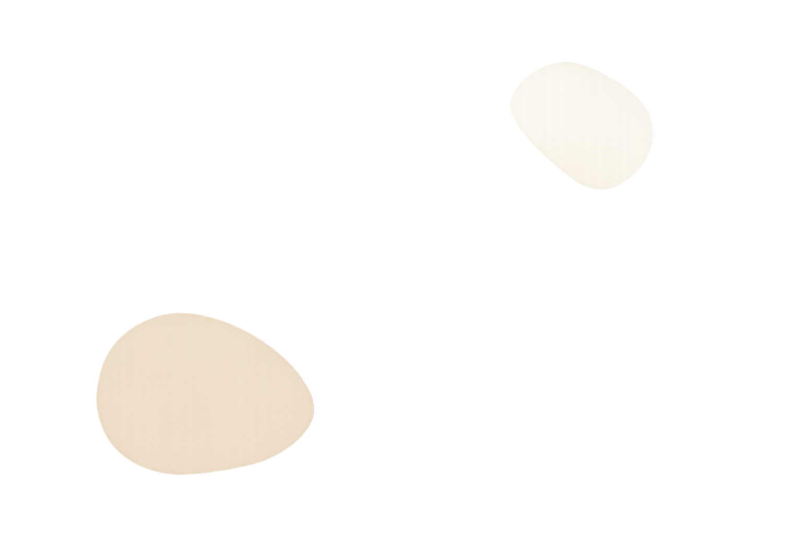

The History of RYUG — A legacy of Ugly Gifts
RYUG was founded in 2025 after our creator, Christian, received seven consecutive ugly gifts during the holiday season — including a ceramic goose wearing cowboy boots. Realizing there must be others suffering from similar gift-related trauma, RYUG was born.
The name Recycle Your Ugly Gift represents our mission:
to rescue, rehome, and repurpose items that were once considered unwantable.
Over the years, RYUG has grown into a thriving marketplace of oddities. Our customers embrace uniqueness, horror, confusion, and the occasional regret.
Today, we proudly host hundreds of items — each one with a story, a past, and a level of ugliness that inspires awe.